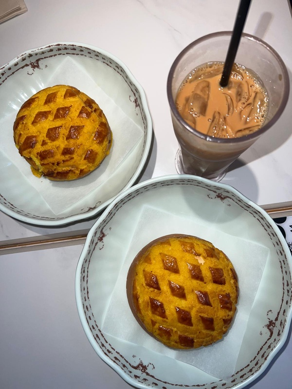

Cha Chaan Teng Breakfast: The Classic Hong Kong Student Breakfast
A cha chaan teng (茶餐廳, “tea restaurant”) is a fast, cheap local diner. There is one on almost every street near a university. Nobody in Hong Kong has a slow sit-down breakfast on a weekday. They eat fast, cheap and here.
The classic breakfast set
The classic breakfast set comes with:
- Macaroni in soup with ham. Yes, macaroni. Yes, for breakfast.
- Scrambled or fried eggs and toast, often with butter or condensed milk.
- A drink: Hong Kong milk tea, coffee, or yuenyeung (coffee and tea mixed).
It costs about HK$35–50 and is usually only served until 11am. It sounds strange. After two weeks you'll defend it to every new exchange student.

Other things to try
- Pineapple bun (bolo bao). No pineapple. The name comes from the crackly sugar top. Order it with a slab of butter inside (bolo yau).
- Hong Kong-style French toast. Deep-fried, filled with peanut butter, served with syrup and butter. Share it.
- Iced lemon tea. The default drink. Iced drinks often cost HK$2–5 extra.
How it works
Sit wherever there's space (see our guide to sharing tables), point at the set menu on the wall, and pay at the till on your way out. No Cantonese? See how to order with zero Cantonese.